Study design
Sites, predictor fields, clusters and the CRO wrapper.
Study sites
Study sites and heatwave days per summer, 1950–2010 vs 2011–2021

About this figure
Left: map of the 12 Mediterranean study sites. Right: mean number of heatwave days per summer (May–Aug) at each site in the training period 1950–2010 (grey) and the test period 2011–2021 (orange). Every site has more heatwave days per summer in the test period (e.g. Greece 4.3 vs 21.9).
presentacion/figuras/01_localizaciones_B.png
Predictor fields and clusters
Local predictors: KMeans clusters of six fields on the 1° EuroMed box

About this figure
KMeans clusters of standardized anomalies (fitted on 1950–1970) for the six local fields on the 1° EuroMed box: Tmax (k = 10), Z500 (8), MSLP (6), soil moisture (10), precipitation (6) and Mediterranean SST (6). Clusters are numbered as in the predictor names, black dots are the 12 sites, and grey nodes are not used (sea for soil moisture, land and excluded nodes for SST). Each cluster can enter the model with a time lag of 3–30 d and a window of 1–30 d; CO2 and the Etesian index, also local predictors, are not drawn.
presentacion/figuras/02_clusters_local.png
Remote predictors: KMeans clusters of seven 2° fields plus NAO, ENSO and IOD

About this figure
KMeans clusters at 2° of Z500 and MSLP over the North Atlantic–Europe, North Atlantic SST, Z500 Asia–North Pacific, tropical SST and tropical OLR (k = 3 each) and tropical Z500 (k = 2), plus the NAO, ENSO and IOD indices; black dots are the sites where they fall inside a domain. Remote predictors can enter with a time lag of 3–90 d and a window of 1–30 d. 'Tropical OLR' is the ERA5 net top-of-atmosphere longwave flux (= −OLR), labelled −OLR in the results figures.
presentacion/figuras/02_clusters_remote.png
Predictor clusters, one map per field
Tmax (local): KMeans clusters, k = 10
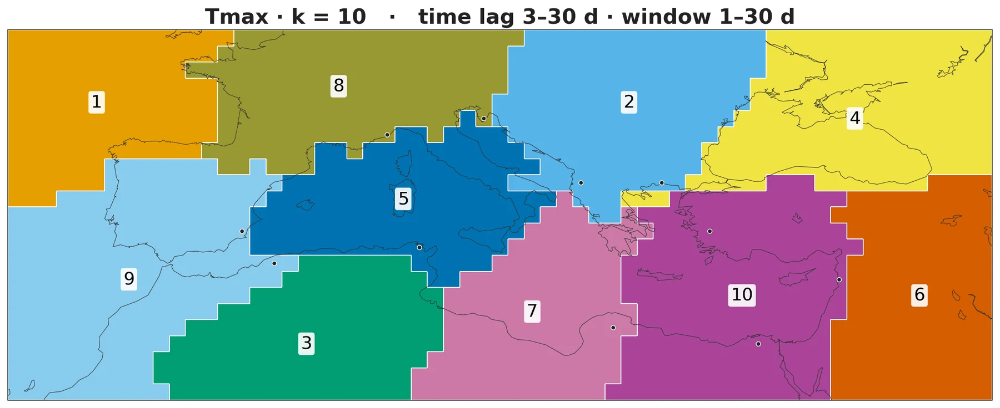
About this figure
Single-field version of the Tmax panel of the local collage: 10 KMeans clusters on the 1° EuroMed box, numbered as in the predictor names; black dots are the 12 sites. Each cluster can be used with a time lag of 3–30 d and a window of 1–30 d.
presentacion/figuras/02_individual/L_t2m_max.png
Z500 (local): KMeans clusters, k = 8
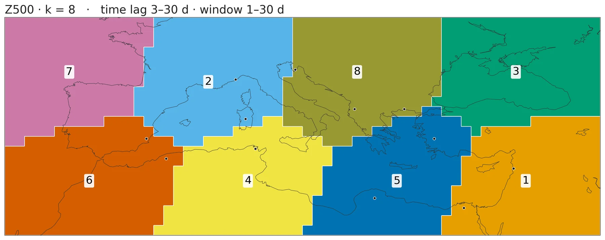
About this figure
Single-field version of the Z500 panel of the local collage: 8 KMeans clusters on the 1° EuroMed box, numbered as in the predictor names; black dots are the 12 sites. Each cluster can be used with a time lag of 3–30 d and a window of 1–30 d.
presentacion/figuras/02_individual/L_z500.png
MSLP (local): KMeans clusters, k = 6
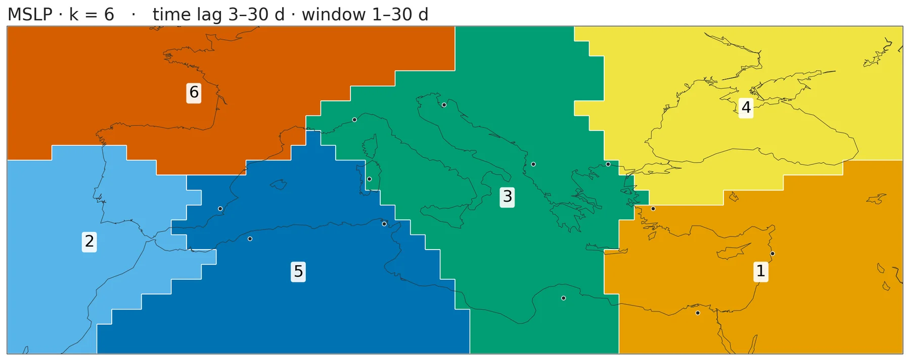
About this figure
Single-field version of the MSLP panel of the local collage: 6 KMeans clusters on the 1° EuroMed box, numbered as in the predictor names; black dots are the 12 sites. Each cluster can be used with a time lag of 3–30 d and a window of 1–30 d.
presentacion/figuras/02_individual/L_msl.png
Soil moisture (local): KMeans clusters, k = 10
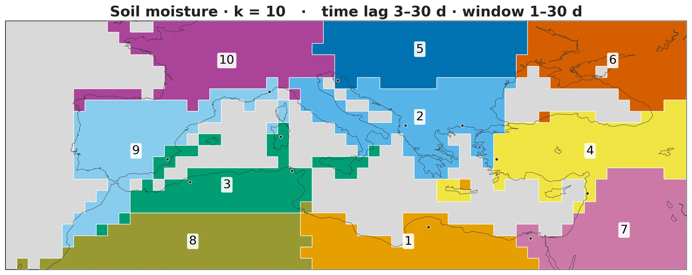
About this figure
Single-field version of the soil-moisture panel of the local collage: 10 KMeans clusters on the 1° EuroMed box, numbered as in the predictor names; black dots are the 12 sites and grey nodes (mostly sea) are not used. Each cluster can be used with a time lag of 3–30 d and a window of 1–30 d.
presentacion/figuras/02_individual/L_sm1.png
Precipitation (local): KMeans clusters, k = 6
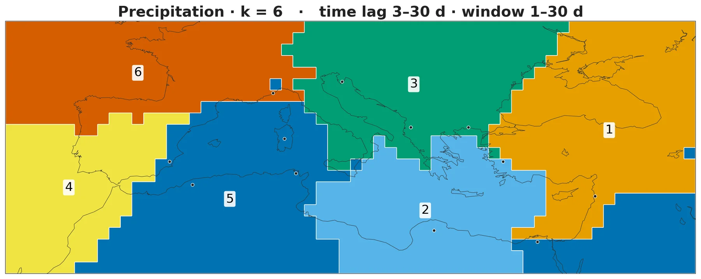
About this figure
Single-field version of the precipitation panel of the local collage: 6 KMeans clusters on the 1° EuroMed box, numbered as in the predictor names; black dots are the 12 sites. Each cluster can be used with a time lag of 3–30 d and a window of 1–30 d.
presentacion/figuras/02_individual/L_tp.png
Mediterranean SST (local): KMeans clusters, k = 6
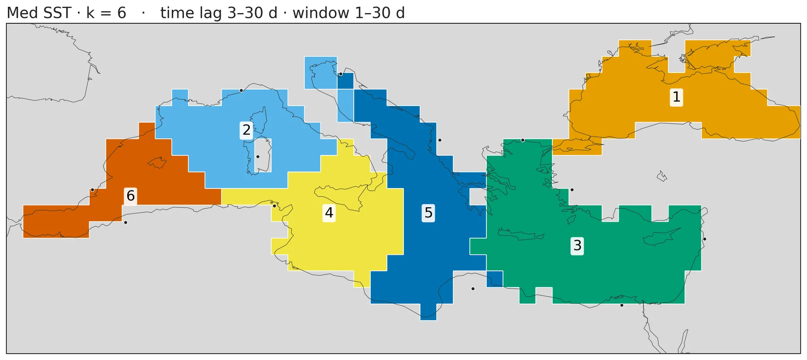
About this figure
Single-field version of the Mediterranean SST panel of the local collage: 6 KMeans clusters over the Mediterranean and Black Sea, numbered as in the predictor names; black dots are the 12 sites and grey nodes (land and some excluded sea nodes) are not used. Each cluster can be used with a time lag of 3–30 d and a window of 1–30 d.
presentacion/figuras/02_individual/L_sstMed.png
Z500 N Atlantic–Europe (remote): KMeans clusters, k = 3
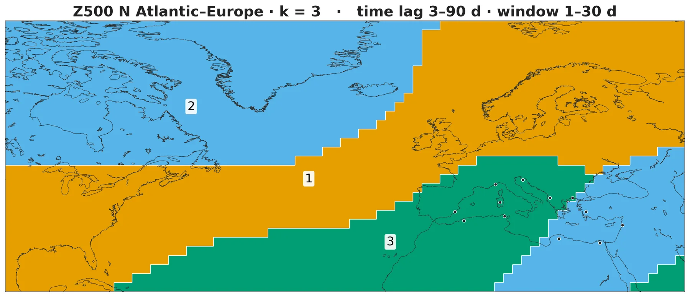
About this figure
Single-field version of the remote Z500 North Atlantic–Europe panel: 3 KMeans clusters on a 2° grid, numbered as in the predictor names (cluster 2 has two separate parts, over the NW Atlantic and the eastern Mediterranean); black dots are the 12 sites. Each cluster can be used with a time lag of 3–90 d and a window of 1–30 d.
presentacion/figuras/02_individual/R_z500.png
MSLP N Atlantic–Europe (remote): KMeans clusters, k = 3
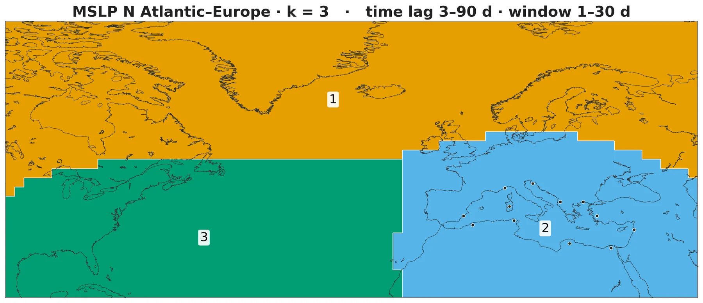
About this figure
Single-field version of the remote MSLP North Atlantic–Europe panel: 3 KMeans clusters on a 2° grid, numbered as in the predictor names; black dots are the 12 sites. Each cluster can be used with a time lag of 3–90 d and a window of 1–30 d.
presentacion/figuras/02_individual/R_msl.png
North Atlantic SST (remote): KMeans clusters, k = 3
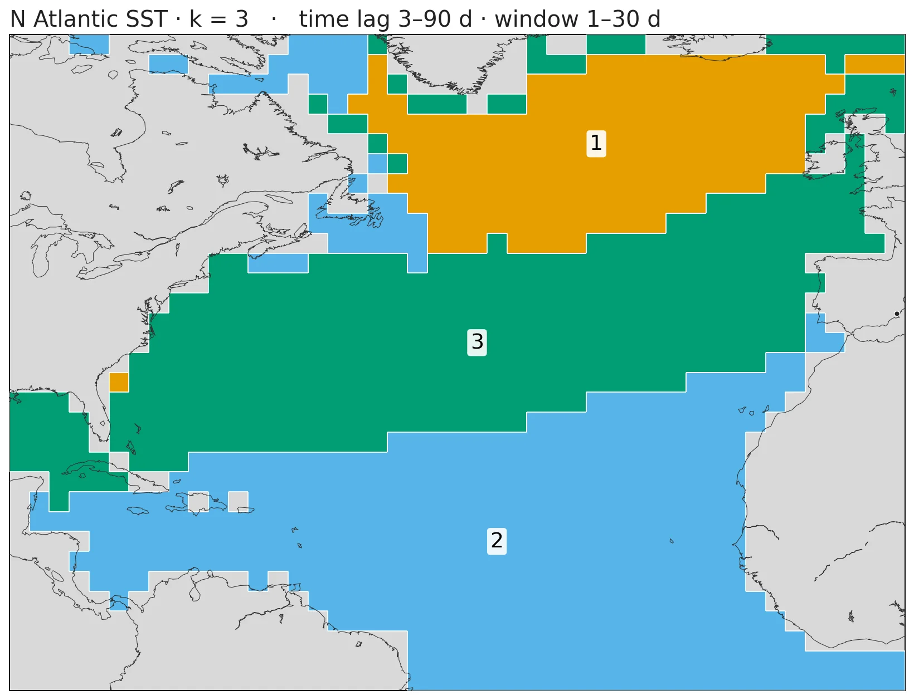
About this figure
Single-field version of the North Atlantic SST panel: 3 KMeans clusters on a 2° grid, numbered as in the predictor names; grey nodes (land and some excluded sea nodes) are not used. Each cluster can be used with a time lag of 3–90 d and a window of 1–30 d.
presentacion/figuras/02_individual/A_sst.png
Z500 Asia–N Pacific (remote): KMeans clusters, k = 3
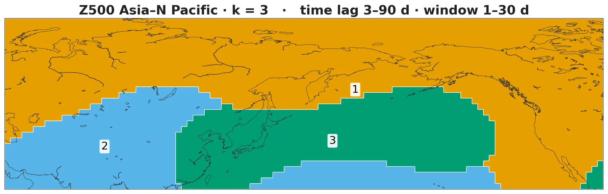
About this figure
Single-field version of the Z500 Asia–North Pacific panel: 3 KMeans clusters on a 2° grid, numbered as in the predictor names. Each cluster can be used with a time lag of 3–90 d and a window of 1–30 d.
presentacion/figuras/02_individual/H_z500.png
Tropical SST (remote): KMeans clusters, k = 3
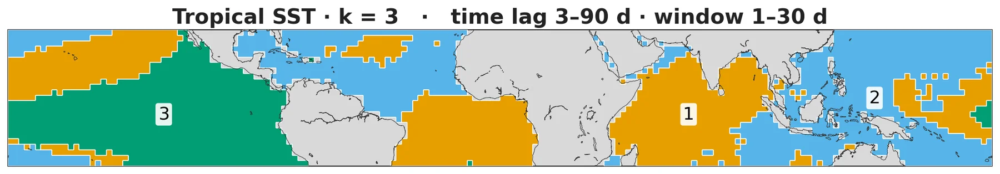
About this figure
Single-field version of the tropical SST panel: 3 KMeans clusters on a 2° tropical band, numbered as in the predictor names; grey (land) nodes are not used. Each cluster can be used with a time lag of 3–90 d and a window of 1–30 d.
presentacion/figuras/02_individual/T_sst.png
Tropical OLR (remote): KMeans clusters, k = 3
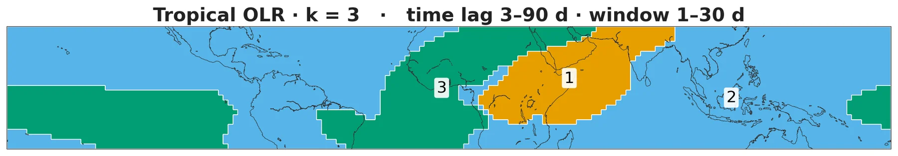
About this figure
Single-field version of the tropical OLR panel: 3 KMeans clusters on a 2° tropical band, numbered as in the predictor names; each can be used with a time lag of 3–90 d and a window of 1–30 d. The field is the ERA5 net top-of-atmosphere longwave flux (= −OLR) and is labelled −OLR in the results figures.
presentacion/figuras/02_individual/T_olr.png
Tropical Z500 (remote): KMeans clusters, k = 2
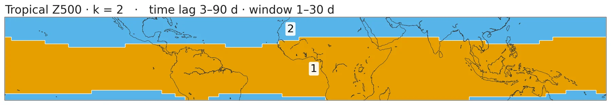
About this figure
Single-field version of the tropical Z500 panel: 2 KMeans clusters on a 2° tropical band (cluster 1 = the inner band, cluster 2 = its northern and southern edges), numbered as in the predictor names. Each cluster can be used with a time lag of 3–90 d and a window of 1–30 d.
presentacion/figuras/02_individual/T_z500.png
Clusters robust within year (analysis versions)
Local fields (EuroMed box, 1°): KMeans clusters and within-year robust counts
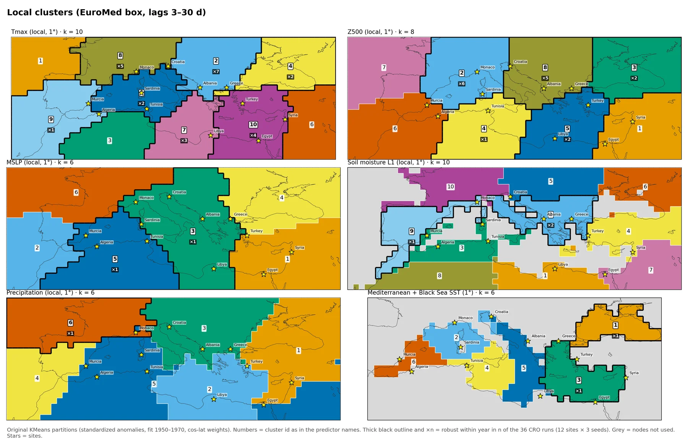
About this figure
KMeans partitions of the six local fields on the 1° EuroMed box (Tmax k = 10, Z500 k = 8, MSLP k = 6, soil moisture L1 k = 10, precipitation k = 6, Mediterranean + Black Sea SST k = 6), fitted on standardized anomalies of 1950–1970 with cos-lat weights. Colours only separate clusters, numbers are the cluster ids used in the predictor names, grey nodes are not used (sea for soil moisture, land and excluded nodes for SST) and yellow stars are the 12 sites. A thick black outline with a ×n tag marks a cluster robust within year in n of the 36 CRO runs: its in-cluster heatwave composite was significant (year-permutation p < 0.05) in train 1950–2010 and in test 2011–2021 with the same sign, and it stayed significant in train, with the same sign in train and test, after each year's non-heatwave mean was removed. 19 of the 46 local clusters carry a mark, 12 of them Tmax or Z500 clusters, and these hold 40 of the 48 counts.
clusters_mapas/figuras/local_clusters.png
Remote fields (2°): KMeans clusters (k = 2–3), none robust within year
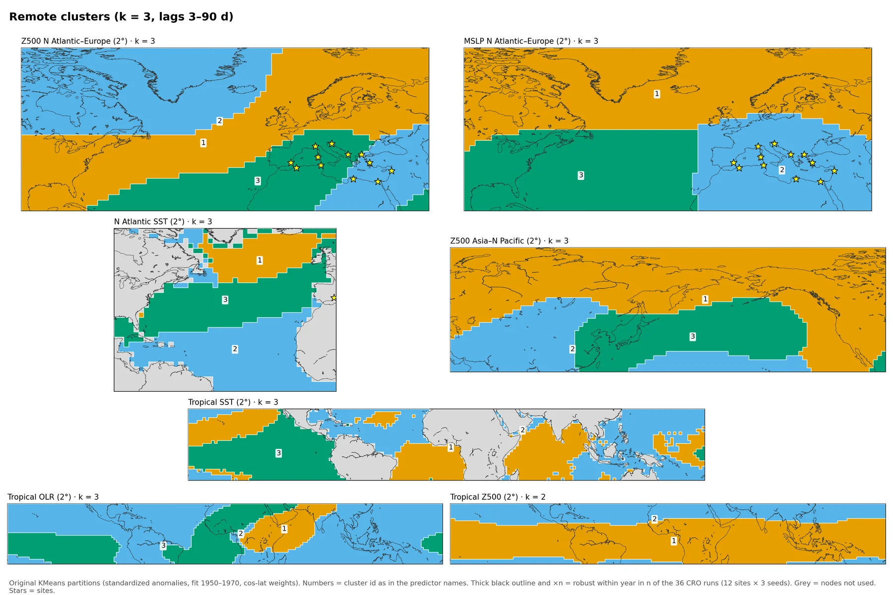
About this figure
KMeans partitions of the seven remote fields on 2° grids: Z500 and MSLP over the North Atlantic–Europe, North Atlantic SST, Z500 over Asia–North Pacific, and tropical SST, OLR and Z500, with k = 3 except tropical Z500 (k = 2, although the figure header says k = 3). Numbers are cluster ids as in the predictor names, grey nodes are not used (land and excluded nodes for SST) and the unlabelled yellow stars are the sites. No remote cluster was robust within year in any of the 36 CRO runs, so none carries the thick outline or ×n tag explained in the footnote.
clusters_mapas/figuras/remote_clusters.png
The CRO wrapper
The CRO wrapper: from spatio-temporal predictors to selected drivers

About this figure
Conceptual view of STCO-FS: the Coral Reefs Optimization (CRO) searches about 10^219 combinations of clusters, time lags and windows, scores each candidate by the cross-validated F1 of a machine-learning model (logistic regression), and keeps a set of drivers, each a cluster region with a lag window before heatwave day t. The three drivers drawn are real choices of the Albania seed-42 run (Z500 c8, Tmax c2 and Med SST c6), which kept 26 of the 71 drivers in total. The hatched strip next to t marks days never used (time lag ≥ 3 d; at most 30 d for local and 90 d for remote drivers).
presentacion/figuras/03_cro_concepto.png
Per-field maps with within-year robust counts
Tmax (local, 1°): KMeans clusters (k = 10) with within-year robust counts
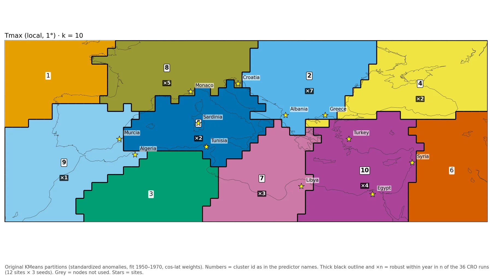
About this figure
Daily maximum temperature (Tmax) anomalies on the 1° EuroMed box partitioned into 10 KMeans clusters; numbers are cluster ids as in the predictor names and yellow stars are the 12 sites. A thick black outline with ×n marks a cluster robust within year in n of the 36 CRO runs: 7 of the 10 clusters are marked, led by cluster 2 (×7, in runs for Albania, Croatia and Greece), cluster 8 (×5: Sardinia, Croatia, Monaco) and cluster 10 (×4: Egypt, Turkey). The label of cluster 5 (×2, Sardinia) is hidden under the Sardinia star.
clusters_mapas/figuras/slides/L_t2m_max.png
Z500 (local, 1°): KMeans clusters (k = 8) with within-year robust counts
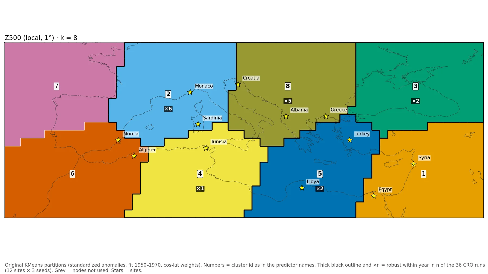
About this figure
500 hPa geopotential height anomalies on the 1° EuroMed box partitioned into 8 KMeans clusters; numbers are cluster ids as in the predictor names and yellow stars are the sites. A thick black outline with ×n marks a cluster robust within year in n of the 36 CRO runs: 5 of the 8 clusters are marked, mainly cluster 2 over France and the western Mediterranean (×6, in runs for Algeria, Croatia and Monaco) and cluster 8 over the Balkans (×5: Albania, Croatia, Greece).
clusters_mapas/figuras/slides/L_z500.png
MSLP (local, 1°): KMeans clusters (k = 6) with within-year robust counts
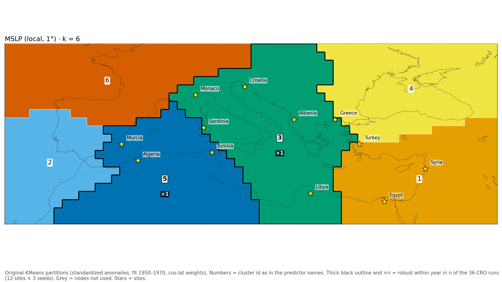
About this figure
Mean sea-level pressure anomalies on the 1° EuroMed box partitioned into 6 KMeans clusters; numbers are cluster ids as in the predictor names and yellow stars are the sites. Only two clusters carry a thick black outline, each robust within year in 1 of the 36 CRO runs: cluster 3 over Italy, the Balkans and the central Mediterranean (×1, a run for Albania) and cluster 5 over the southwestern Mediterranean and northwest Africa (×1, a run for Libya).
clusters_mapas/figuras/slides/L_msl.png
Soil moisture L1 (local, 1°): clusters (k = 10) with within-year robust counts
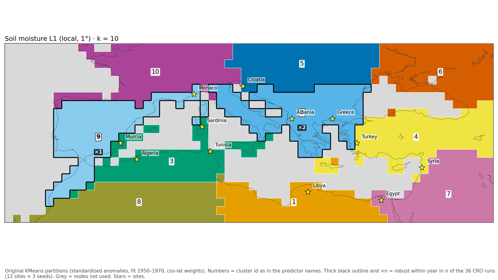
About this figure
Soil-moisture (layer L1) anomalies on the 1° EuroMed box partitioned into 10 KMeans clusters; grey nodes (sea) are not clustered, numbers are cluster ids and yellow stars are the sites. Two clusters carry a thick black outline: cluster 2 over Italy, the Balkans and Greece (×2, both in runs for Turkey) and cluster 9 over Iberia and the northwestern Mediterranean coast (×1, a run for Tunisia). Both clusters are light blue, and the label of cluster 2 is partly hidden behind the Albania site label.
clusters_mapas/figuras/slides/L_sm1.png
Precipitation (local, 1°): KMeans clusters (k = 6) with within-year robust counts
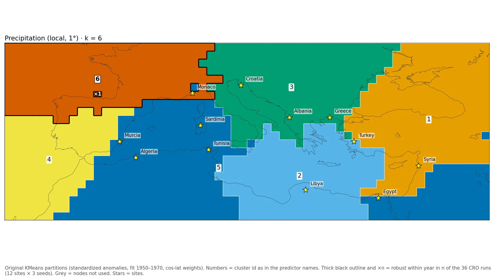
About this figure
Precipitation anomalies on the 1° EuroMed box partitioned into 6 KMeans clusters; numbers are cluster ids as in the predictor names and yellow stars are the sites. Only cluster 6, over France and the Bay of Biscay, carries a thick black outline: it was robust within year in 1 of the 36 CRO runs, a run for Greece.
clusters_mapas/figuras/slides/L_tp.png
Mediterranean + Black Sea SST (1°): clusters (k = 6), within-year robust counts
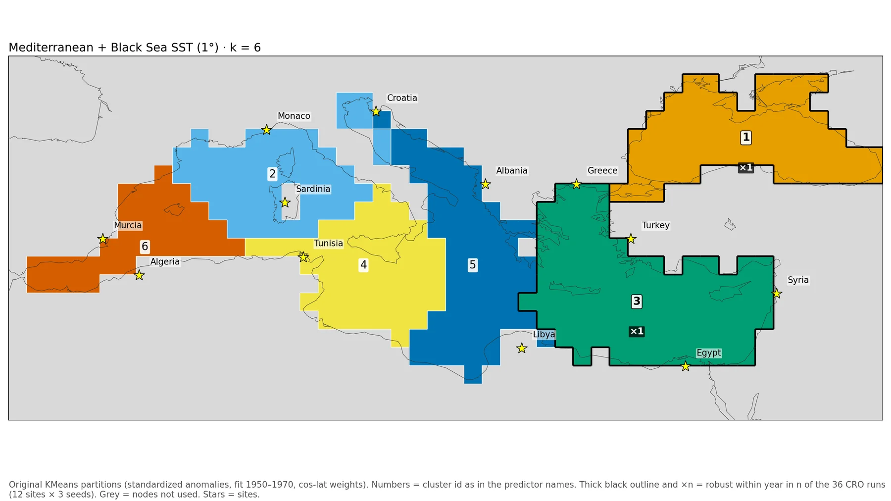
About this figure
Mediterranean and Black Sea SST anomalies at 1° partitioned into 6 KMeans clusters; grey nodes (land and excluded nodes) are not used, numbers are cluster ids and yellow stars are the sites. Cluster 1 (Black Sea) and cluster 3 (eastern Mediterranean) carry a thick black outline: each was robust within year in 1 of the 36 CRO runs, both in runs for Greece.
clusters_mapas/figuras/slides/L_sstMed.png
Alternative versions
Study sites: map of the 12 Mediterranean locations
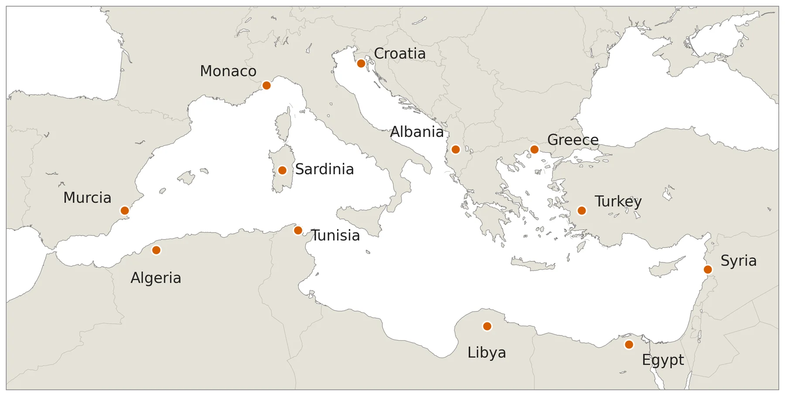
About this figure
Map of the 12 study sites without the heatwave-day bars. Alternative version; the talk uses the map that adds heatwave days per summer for 1950–2010 and 2011–2021.
presentacion/figuras/01_localizaciones_A.png
Z500 North Atlantic–Europe (remote, 2°): KMeans clusters (k = 3)
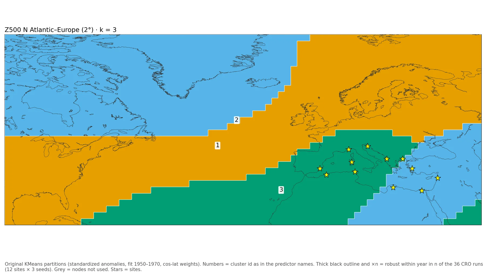
About this figure
500 hPa geopotential height anomalies over the North Atlantic–Europe sector on a 2° grid partitioned into 3 KMeans clusters; numbers are cluster ids and the unlabelled stars are the 12 sites, eight of which (Murcia, Algeria, Tunisia, Monaco, Sardinia, Croatia, Albania, Greece) lie in cluster 3 while Libya, Egypt, Turkey and Syria lie in cluster 2. Cluster 2 has two separate parts, over Canada–Greenland and over the eastern Mediterranean, and no cluster was robust within year in any of the 36 CRO runs. Original analysis version; the presentation figure set has a redrawn per-field version of this map.
clusters_mapas/figuras/slides/R_z500.png
CRO wrapper schematic: genome, lagged inputs and fitness (technical version)
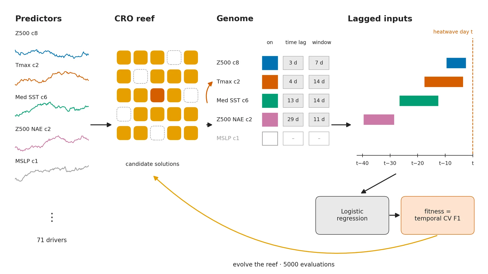
About this figure
Technical schematic of the CRO step: the 71 predictor series feed a reef of candidate solutions; each genome sets on/off, time lag and window for every driver; the lagged inputs before heatwave day t train a logistic regression whose temporal CV F1 is the fitness; and the reef evolves over 5000 evaluations. The example genome is part of a real solution (Albania, seed 42): Z500 c8 (3 d, 7 d), Tmax c2 (4 d, 14 d), Med SST c6 (13 d, 14 d), Z500 NAE c2 (29 d, 11 d) and MSLP c1 switched off; the predictor curves are illustrative. The talk uses the conceptual version instead.
presentacion/figuras/03_cro_esquema.png
MSLP North Atlantic–Europe (remote, 2°): KMeans clusters (k = 3)
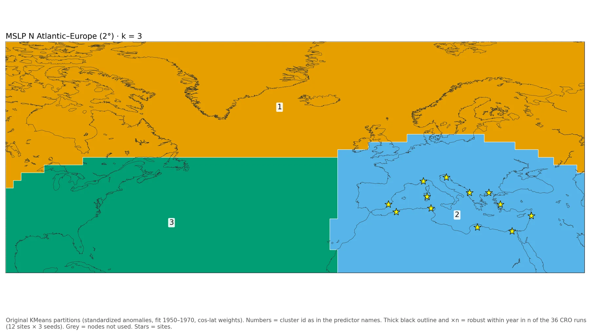
About this figure
Mean sea-level pressure anomalies over the North Atlantic–Europe sector on a 2° grid partitioned into 3 KMeans clusters: cluster 1 in the north, cluster 3 over eastern North America and the western subtropical Atlantic, and cluster 2 over the Mediterranean, North Africa and southern and central Europe, which contains all 12 sites (unlabelled stars). No cluster was robust within year in any of the 36 CRO runs. Original analysis version; the presentation figure set has a redrawn per-field version of this map.
clusters_mapas/figuras/slides/R_msl.png
North Atlantic SST (remote, 2°): KMeans clusters (k = 3)
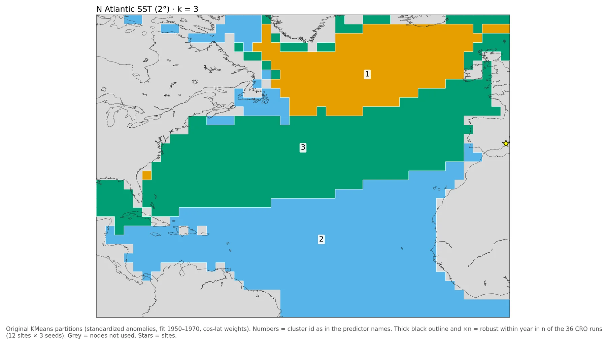
About this figure
North Atlantic SST anomalies on a 2° grid partitioned into 3 KMeans clusters, mainly cluster 1 in the subpolar North Atlantic, cluster 3 in the mid-latitude band and cluster 2 in the subtropics and tropics; grey nodes (land and excluded nodes) are not used and the star at the eastern edge is Murcia. Cluster 1 passed the train–test robustness test in 2 runs but never the within-year test, so no cluster has an outline. Original analysis version; the presentation figure set has a redrawn per-field version of this map.
clusters_mapas/figuras/slides/A_sst.png
Z500 Asia–North Pacific (remote, 2°): KMeans clusters (k = 3)
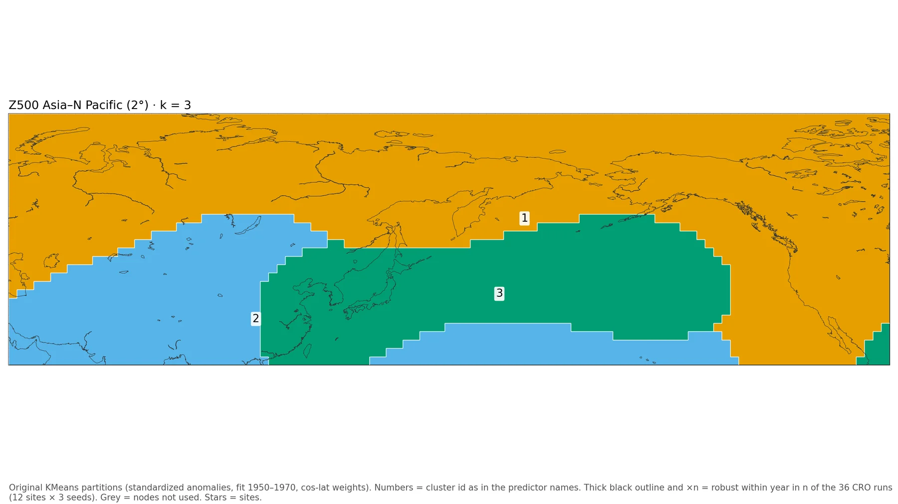
About this figure
500 hPa geopotential height anomalies over Asia and the North Pacific (a box that crosses the dateline and contains no site) on a 2° grid partitioned into 3 KMeans clusters: cluster 3 is a mid-latitude band from eastern China and Japan across the North Pacific, cluster 2 covers southern and central Asia plus a subtropical Pacific strip, and cluster 1 the high latitudes and the eastern Pacific–North America. No cluster was robust within year in any of the 36 CRO runs. Original analysis version; the presentation figure set has a redrawn per-field version of this map.
clusters_mapas/figuras/slides/H_z500.png
Tropical SST (remote, 2°): KMeans clusters (k = 3)
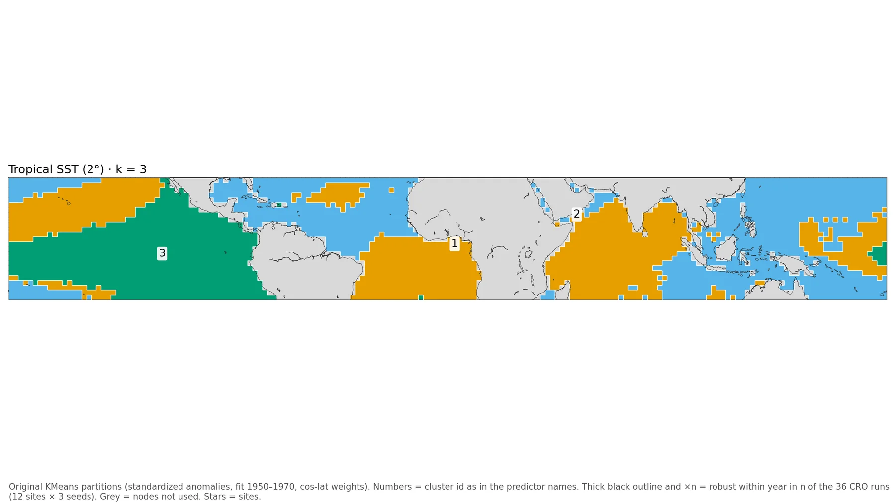
About this figure
Tropical SST anomalies on a 2° grid partitioned into 3 KMeans clusters; cluster 3 mainly covers the central and eastern tropical Pacific, and grey nodes (land and a few excluded nodes) are not used. Cluster 2 passed the train–test robustness test in 2 runs but never the within-year test, so no cluster has an outline. Original analysis version; the presentation figure set has a redrawn per-field version of this map.
clusters_mapas/figuras/slides/T_sst.png
Tropical OLR (remote, 2°): KMeans clusters (k = 3)
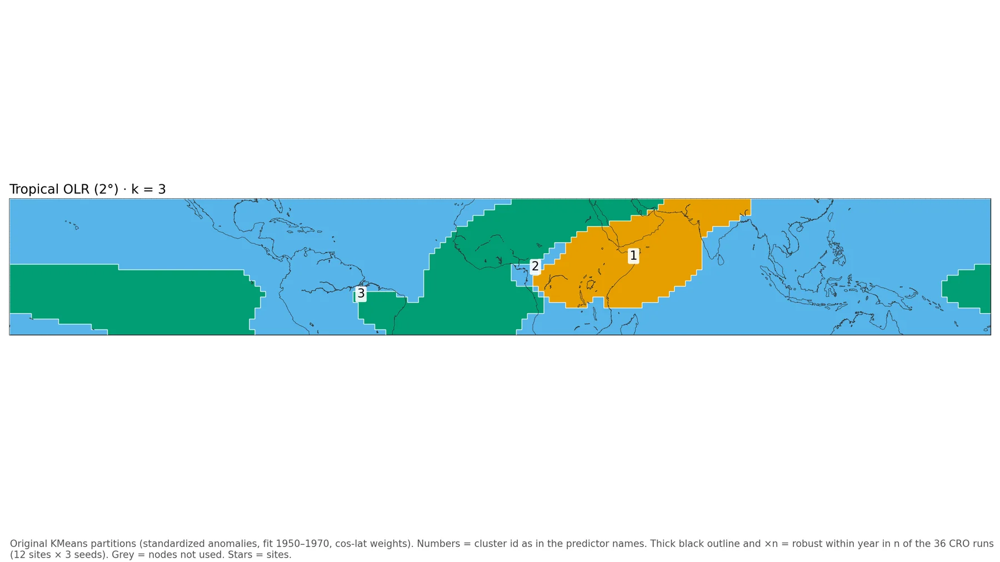
About this figure
Tropical outgoing longwave radiation anomalies (stored as net top-of-atmosphere longwave, i.e. −OLR) on a 2° grid partitioned into 3 KMeans clusters: cluster 1 over East Africa and the Arabian Sea, cluster 3 over the tropical Atlantic–West Africa sector and a central Pacific band, and cluster 2 over most of the rest (2845 of 4500 nodes). In this version the labels 2 and 3 sit at cluster edges, and no cluster was robust within year in any of the 36 CRO runs. Original analysis version; the presentation figure set redraws this map with clearer label positions.
clusters_mapas/figuras/slides/T_olr.png
Tropical Z500 (remote, 2°): KMeans clusters (k = 2)
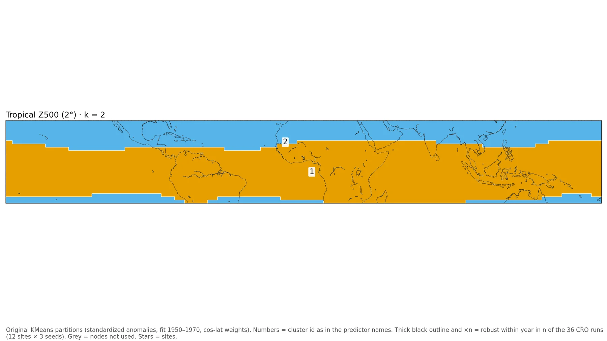
About this figure
Tropical 500 hPa geopotential height anomalies on a 2° grid partitioned into 2 KMeans clusters: cluster 1 is the equatorial band and cluster 2 its northern and southern margins. Neither cluster was robust within year in any of the 36 CRO runs. Original analysis version; the presentation figure set has a redrawn per-field version of this map.
clusters_mapas/figuras/slides/T_z500.png